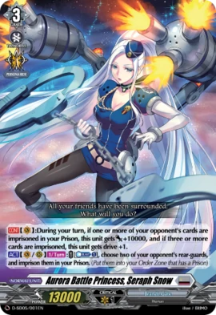
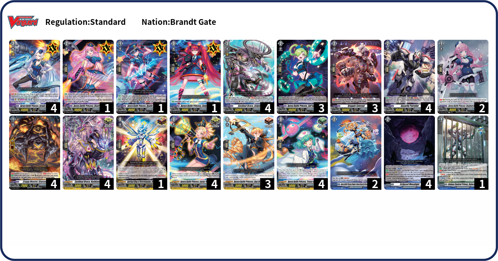

Who is Aurora Battle Princess, Seraph Snow?

"An agent of the intergalactic police security organization (Cosmo Security) that manipulates an extra-large pair of handcuffs. Human, 17 years of age. Behind her long white hair are 2 sets of triple-mounted machine gun arms. With a stellar arrest rate of 100%, and a reputation of cool demeanor that precedes her, criminals shudder at the mere mention of Seraph Snow’s name."

Deck Code: 9QKU
Seraph makes use of her "Prison" mechanic, imprisoning units of the opposing side, requiring them to pay a tax to free them. If you reach 3 cards in your prison, Seraphs continuous ability is at full power, allowing you to pressure your opponents with three drive checks. Other cards in your deck either imprison units (Cuff Spring and Security Patroller), make use of "Shadow Army Tokens" (Zelgio or Eclipsed Moonlight) to add extra pressure to Seraph, or units that increase in power with more cards in your prison (Grapple External or Roudend Azalea). Make use of your "Prison" and imprison all those around your opponent's vanguard.